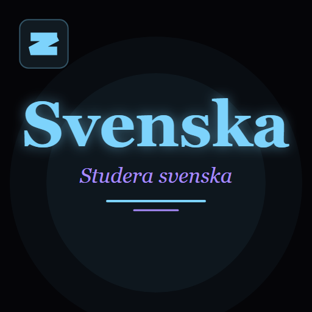
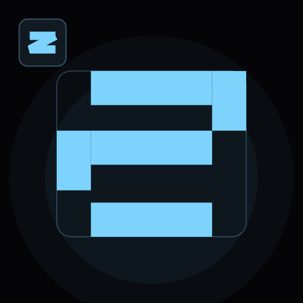
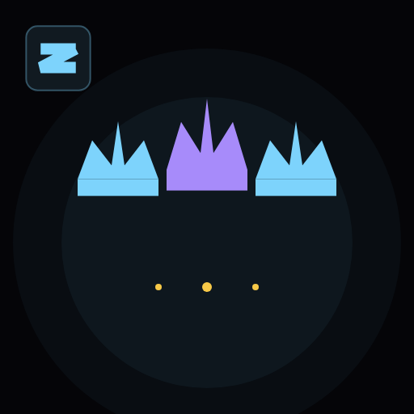
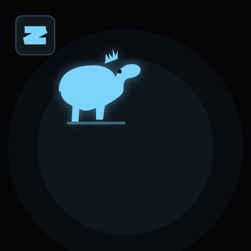
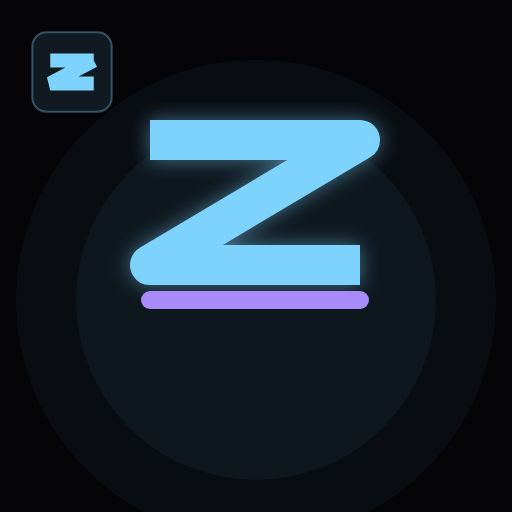
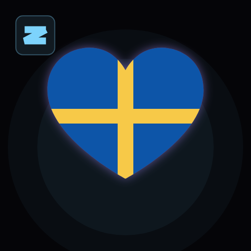
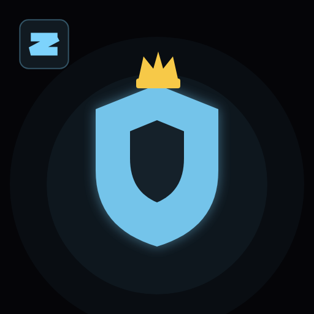
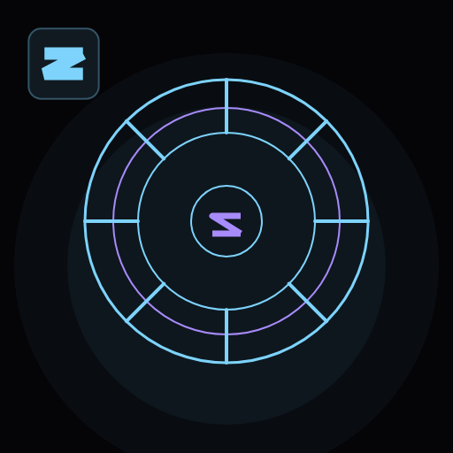
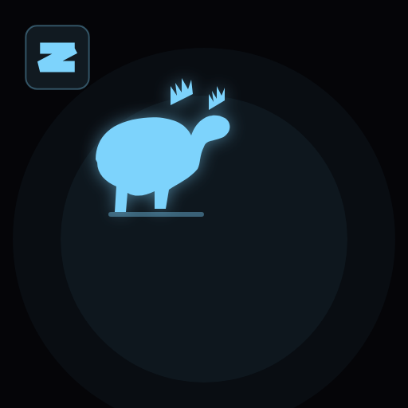

Varje ikon: ZT-märket uppe till vänster + stor logotyp i mitten (mörk bakgrund, himmelsblå accent)

Svenska Wordmark
#01
Stor serif-textlogotyp «Svenska» med underrubrik
Text
Blockigt S
#02
Geometrisk blockbokstav S i samma stil som ZT-märket
Monogram
Tre Kronor
#03
Sveriges tre kronor i en rad
Symbol
Dalahäst
#04
Klassisk svensk dalahäst-silhuett
Symbol
Runbokstaven S
#05
Nordisk runa ᛋ (sól) som mittpunkt
Runa
Flagghjärta
#06
Svensk flagga i hjärtform (blågul)
SymbolÖppen bok
#07
Öppen bok med textrader – lärande
Studie
Sköld & Krona
#08
Heraldisk sköld med gyllene krona
Symbol
Vegvisir
#09
Nordisk kompass med S-kärna
Runa
Älgen
#10
Silhuett av den svenska älgen
Symbol